Video editor & AI content producer — assignment
1 · The assignment
Take this brief from concept to final export: one 20–30 second marketing video in {{ aspect }} for Colaberry's data & AI training, plus one alternate opening/hook. The edit must include at least one AI-assisted visual element — generated b-roll, image-to-video, AI voiceover, or visual cleanup.
This is not a prompt-to-video test. We're evaluating editing, storytelling, pacing, and how much creative control you keep over AI output — a raw generation with no finishing won't score.
2 · The campaign message — from training.colaberry.com
Hook / headline: Switch to a career in data & AI — no previous IT experience required.
- 5,000+ successful graduates since 2012 · learners from 45+ countries
- $80,000 average starting salary · 98% employment rate
- Project-based, mentor-led, built around your life — no degree or tests required
- Programs: Data Analytics · Data Science · Job Readiness
CTA end card: Colaberry logo + "Apply now — training.colaberry.com"
3 · Deliverables — all six
4 · The AI element — what we look for
Runway, Veo/Flow, VEED, Firefly, Premiere AI features, ComfyUI, or similar — your pick.
Consistent style, framing, and motion — reference images, first/last-frame, seeds.
Artifacts fixed: movement, anatomy, text, product details, scene continuity.
AI where it helps, real footage where it's better. Tell us why in the process note.
5 · Materials & ground rules
- Footage: screen-record any pages of training.colaberry.com; royalty-free stock (Pexels, Pixabay, etc.) is fine — everything goes on the asset list.
- Logos: use the attached brand kit only (full-color on light, white mark on dark/cherry). Never recolor or add effects.
- Brand guardrails: Roboto for text, cherry red #FB2832 as the lead accent, sentence case, no emoji, no hype-speak.
- Rights: music, voices, likenesses, and generated material must carry commercial usage rights — no real-person likeness without consent.
- Original work: made for this assignment, by you. Basic unedited prompt-to-video output will not be considered.
6 · How we score it
7 · Submitting
Send one Drive/WeTransfer link containing all six deliverables, clearly named (01-final.mp4, 02-alt-hook.mp4, …). Reply to the email that sent you this brief; questions welcome any time before the deadline.

Hiring manager: set the deadline and aspect in Tweaks, swap section 2's message if you're testing a specific campaign, and send with assets/logo/colaberry-horizontal.png and colaberry-mark-white.png attached.